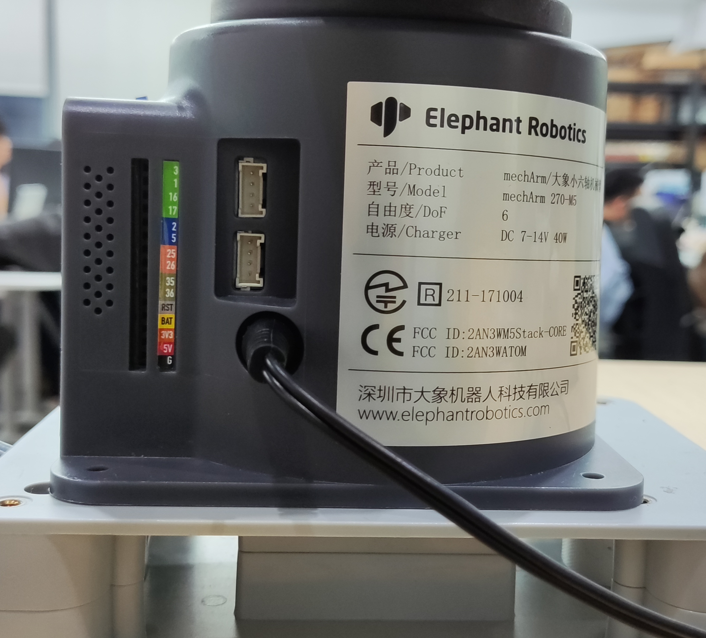
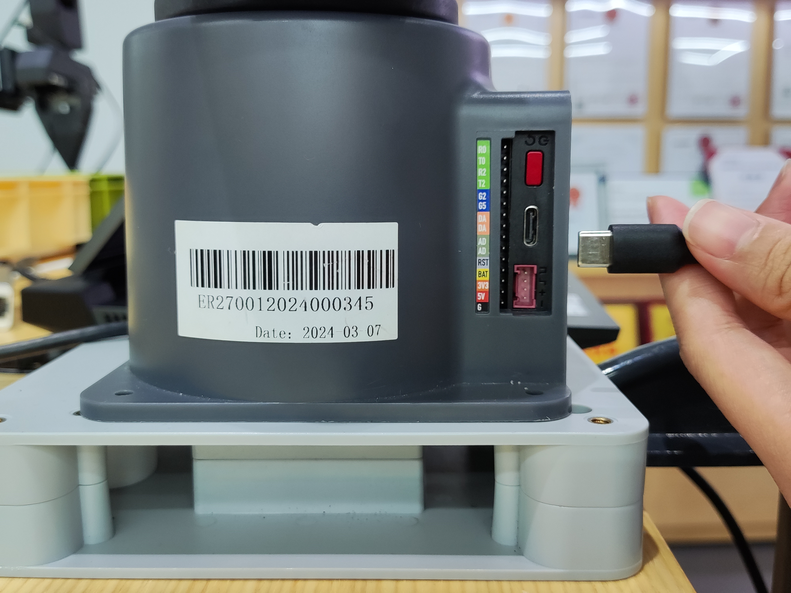

1. Product Standard Inventory
Product List Image
Data updating...
Product Standard Inventory Comparison Table
| Serial Number | Product |
|---|---|
| 1 | myArm Controller 650 Mechanical Arm |
| 2 | Product Kit, including USB-Type C, Cup Hexagon Socket Full Thread Stainless Steel Screws |
| 3 | DC12V Direct Current Power Supply |
| 4 | Fixed Baseplate |
| 5 | G-Clamp |
| 6 | Product Qualification Certificate |
Note: After the packaging box is in place, please confirm that the robot packaging is intact. If damaged, please contact the logistics company and your local supplier promptly. After unpacking, please check the actual items in the box according to the item list.
2. Product Unboxing Guide
Product Unboxing Graphic Guide
Why Follow Step-by-Step Disassembly
In this section, we strongly recommend disassembling the product according to the specified steps. This not only helps ensure that the product is not damaged during transportation but also minimizes the risk of accidental faults. Please carefully read the following graphic guide to ensure the safety of your product during unboxing.
- 1 Check if the packaging box is damaged. If damaged, please contact the logistics company and your local supplier promptly.
- 2 Open the packaging box and take out the product brochure, sponge packaging cover, myCobot robot arm, matching power supply, emergency stop switch, flat base, and accessory package.
- 3 Make sure each step is completed before proceeding to the next to prevent unnecessary damage or omissions.
Note: After removing the product, carefully inspect the appearance of each item. Check the actual items in the packaging box against the item list.
Product Unboxing Video Guide
3. Power-On Test Guide
3.1 Structural Installation and Fixation
The myArm weighs 1.8 kilograms. Because the center of gravity changes with the robot's movement during use, it is required that the robot be fixed on a sturdy base at the beginning. Both fixed and mobile bases are acceptable.
Graphic Guide
Basic Interface Dimensions
- The base fixing hole is the interface between the robot and other bases or surfaces. The specific hole size is shown in the figure below. There are 4 counterbores with a diameter of 4.5 millimeters, which can be fixed with M6 bolts.

- The end is equipped with a flange for compatibility with LEGO component holes and threaded holes. Before installation, make sure there are corresponding threaded holes on the fixed base.
Before Installation, Please Confirm
- Environmental conditions meet the requirements listed.
- The installation location is not smaller than the robot's working range, and there is sufficient space for installation, use, maintenance, and repair.
- Place the base in the appropriate position.
- Prepare tools related to installation, such as screws, wrenches, etc.
- After confirming the above steps, move the robot to the base installation platform, adjust the position of the robot, align the fixing holes of the robot base with the holes on the base installation platform, align the screws with the holes, and tighten them after aligning.
Note: When adjusting the position of the robot on the base installation platform, do not push or pull the robot directly on the base installation platform to avoid scratching. When manually moving the robot, do not apply external force to the vulnerable parts of the robot to avoid unnecessary damage to the robot.
- After the robot is installed, cable connection and use can be performed.
Video Guide
For more installation details, scan the code to watch the video:
Data updating...
3.2 External Cable Connection
Graphic Guide
Before operation, please ensure that you have read the Chapter 3 Safety Instructions to ensure safe operation. At the same time, connect the power adapter to the mechanical arm and fix the mechanical arm base on the desktop.
The myArm must be powered by an external power supply to provide sufficient power:
- Rated Voltage: 12V
- Rated Current: 5A
- Plug Type: DC Circular Interface
Please note that you cannot only use TypeC for power supply. Please use the officially recognized power supply to avoid damage to the mechanical arm.
The use case diagram is shown in the figure below: (Please align the use case diagram carefully for connection)
Step 1:

Step 2:

Step 3:

Step 4:

Step 5:

3.3 Power-On Status Display
Graphic Guide
3.3.1 Connect Power
Start immediately after connecting the power cord.
3.3.2 Machine Startup
During startup, the screen will display a delay waiting interface.
3.3.3 State Display
The display screen shows relevant information about the system desktop.

If you have read all the content of this chapter, please continue reading the next chapter.
← Previous Chapter | Next Chapter →